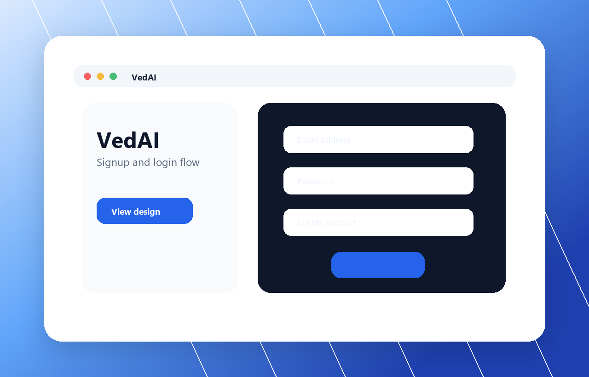
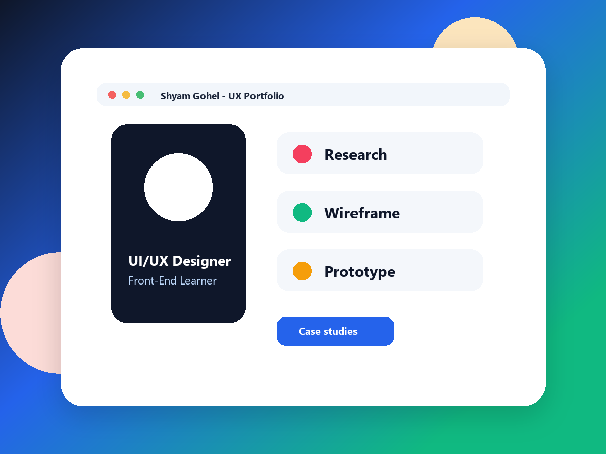
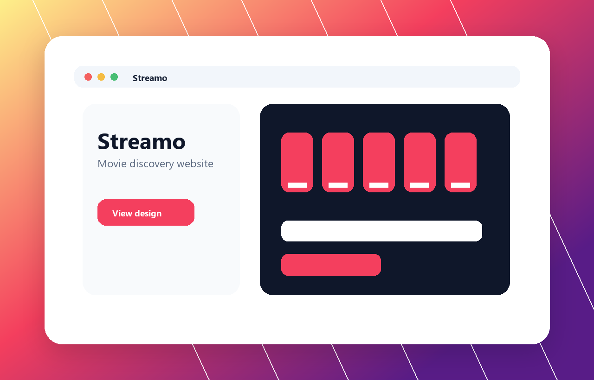
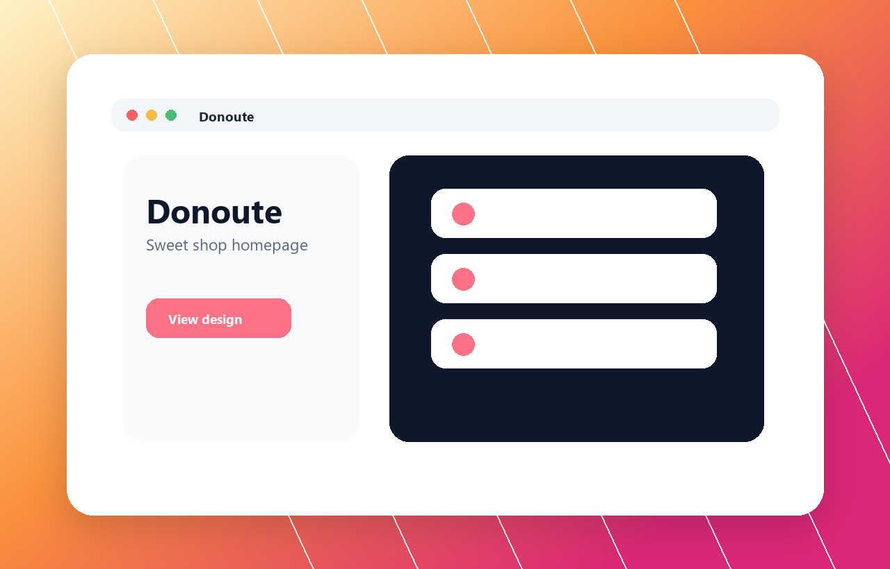
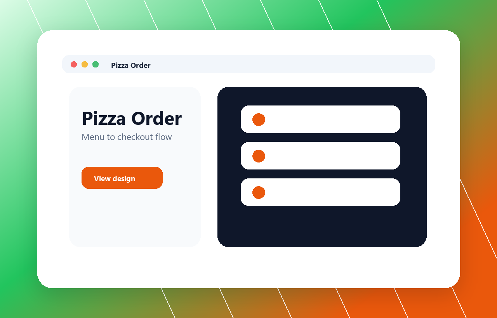
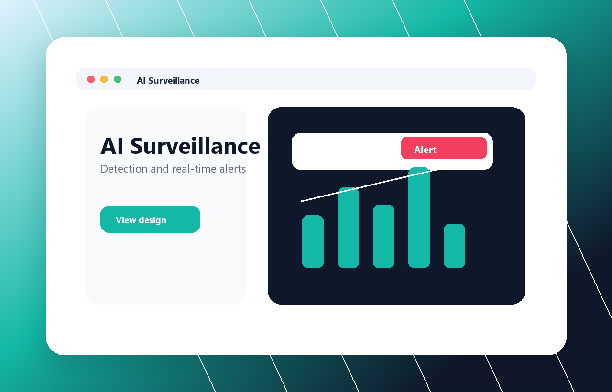

Figma | Login Flow
Login & Signup Page - VedAI Startup
Clean signup and login screens for a tech startup with focused account entry and calm visual hierarchy.
- Simple form layout
- Startup-ready visual style
- Clear action path
UI/UX Designer | Front-End Learner | AI & ML Enthusiast
I design clean screens, user flows, and responsive web experiences while learning new tools quickly. My work blends Figma, front-end practice, and practical exposure to AI, machine learning, Microsoft Copilot, and emerging technology.

I enjoy turning requirements into clean digital screens, improving layouts for users, and converting design ideas into readable front-end code. I am comfortable learning new tools, collaborating with teams, and building practical user-friendly experiences.

Figma | Login Flow
Clean signup and login screens for a tech startup with focused account entry and calm visual hierarchy.

Figma | Entertainment
Sleek movie discovery landing page focused on browsing, previewing, and finding content quickly.

Figma | Food Brand
Colorful homepage concept for a sweets and donut shop with friendly product-focused sections.

Figma | Ordering Flow
Menu browsing, cart review, and checkout interface designed for quick ordering and easy scanning.

Python | AI/ML | OpenCV
Camera-feed monitoring concept using Python, OpenCV, and ML logic for detection and real-time alerts.
Read requirements, identify user needs, and map the screen purpose.
Sketch the flow, layout priority, and useful interaction path.
Create clean screens with color, type, hierarchy, and visual rhythm.
Practice HTML, CSS, JavaScript basics, and improve through feedback.
Microsoft Elevate - GTU Internship Program with Fice Education Pvt. Ltd.
Completed a 12-week program covering AI, machine learning, Microsoft Copilot, and emerging technologies.
Flikt Technology Web Solution
Practiced front-end and back-end fundamentals while learning the complete flow of a web project.
EazyByts Web Solutions
Created clean screens for web projects and learned to translate requirements into user-friendly interfaces.
Computer Science & Engineering
Ahmedabad Institute of Technology | May 2023 - CurrentOm Institute of Engineering and Technology, Junagadh
Nov 2020 - May 2023Microsoft Elevate AI/ML, EazyByts UI/UX Internship, Flikt Full Stack Training
Jan 2025 - Apr 2026Gujarati native, Hindi fluent, English basic
Ahmedabad, GujaratI am open to UI/UX design internships, front-end learning opportunities, and projects where thoughtful layouts and quick learning matter.